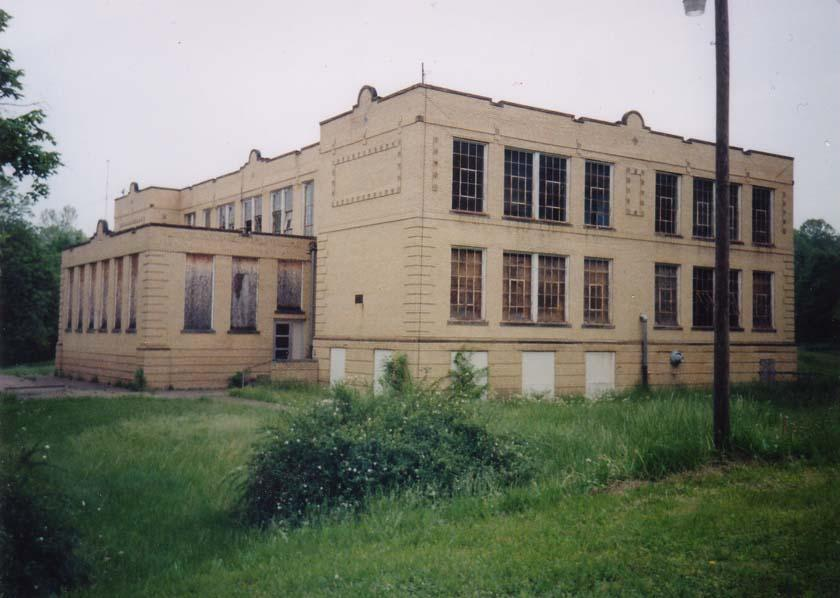
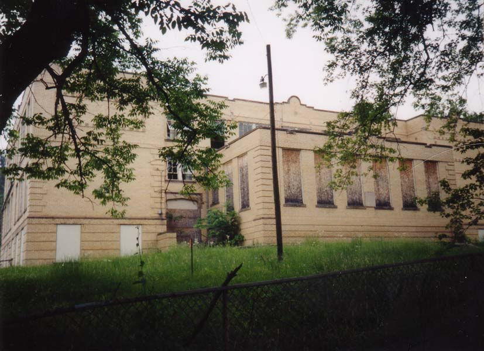
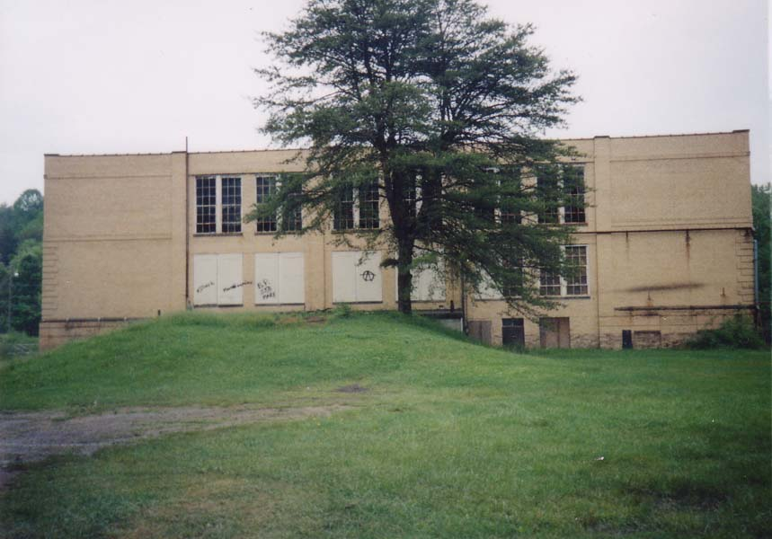
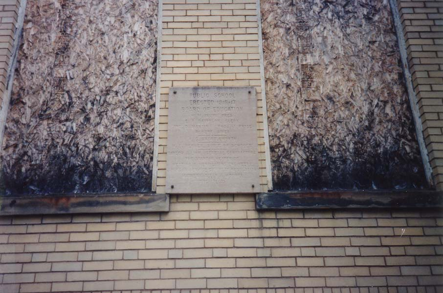
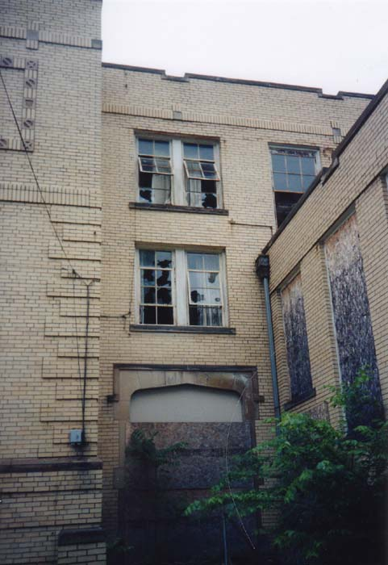
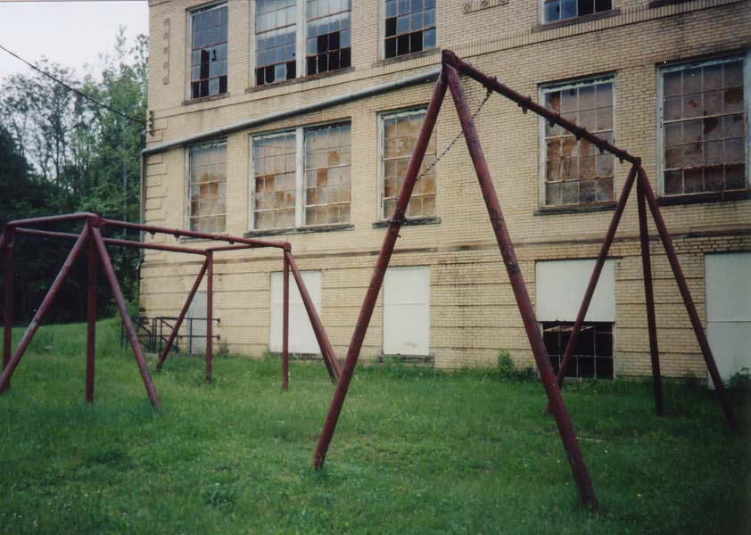
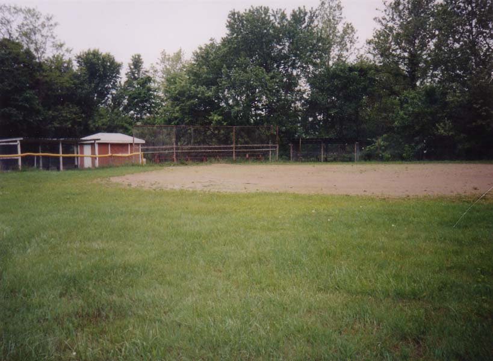
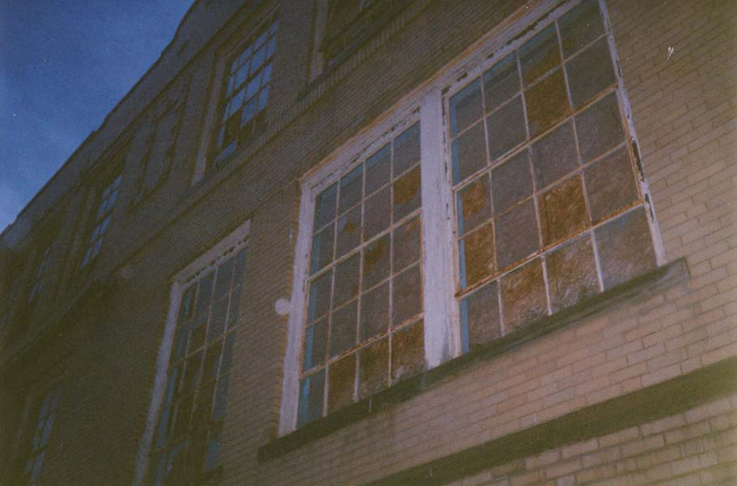

There are lots of abandoned schools in southeastern Ohio these days. You see them everywhere--Nelsonville, Athens, Shawnee, New Lexington. One of the coolest stands in New Straitsville, which is most famous for its 100+ year mine fire. Now New Straitsville kids go to a shiny new consolidated school down the highway, but for the better part of the twentieth century they came here. Today the New Straitsville Public School is an empty and unused abandoned building. To understand why this is, I have to take you back to 1991 and tell you the story of DeRolph v. Ohio.

Nathan DeRolph was a high school freshman in Perry County, which is, by some standards, the poorest county in the state. Years ago it was a prosperous industrial area, employing thousands in its mills and mines, but by the 1980s the jobs had gone elsewhere and local property values were at their nadir. If Perry County was poor then its public schools were poor; schools were funded as a percentage of local property tax receipts.

Nathan DeRolph had occasion to visit Dublin Scioto High School in the north suburbs of Columbus. If you've ever been to Dublin Scioto High School (and you didn't go to Dublin Scioto High School), you know how he felt. They have pools. They have television broadcasting classes. Their building looks like the headquarters of some trillion-dollar corporation. It's enough to make you hate rich people.
So Dale DeRolph sued the state of Ohio and the State Board of Education on behalf of his son, citing the clause in the Ohio Constitution which mandates that a "fair and equitable" system of public schools be maintained. Judge Linton Lewis found in his favor, only to have education governor George Voinovich announce an appeal of the decision. DeRolph lost 2-1 in the appeals court, but that decision was reversed by the Ohio Supreme Court. The Supremes--the final authority on such things--ruled that a system based so much on property taxes (and therefore property values) was unconstitutional because it fostered inequality. In Vinton County one elementary school had no plumbing in their building. Vinton County High School couldn't afford to provide lunch for its students. Inner-city Cleveland schools had garbage cans stationed in classrooms to catch water leaking through crumbling ceilings. Kids in DeRolph's own district dealt with crumbling, unsafe buildings with water leaks, lead paint, and textbooks which pre-dated the Apollo moon missions. All this while kids lucky enough to have been born in places like Dublin, Upper Arlington, Lakewood, and Indian Hill were treated to indoor pools and tracks, high quality ceiling fans, lockers, and desks as well as daily news programs broadcast from the school (I am not making this up), and shiny steel-and-glass buildings less than ten years old.

It was 1997 when the Supreme Court's decision came down; Nathan DeRolph had long since graduated and moved on to college. Although he wasn't able to enjoy what he had won, maybe his kids will. I remember day the decision came in very well; an English teacher from my high school went around knocking on classroom doors in the middle of fourth period, letting everybody know. My Math teacher took time out of class to explain it. I think they might want to consider adding a little "Home of Nathan and Dale DeRolph" plaque below the "Now Entering Perry County" signs.

The Supreme Court gave Ohio legislators one year to fix the school funding system. They stalled and screwed around and were almost held in contempt a couple of times while they waited for the next time Supreme Court Justice Alice Robey Resnick (a DeRolph supporter) was up for re-election. Millions of dollars were spent to defeat her, with ominous "Is Justice for Sale in Ohio?" ads? They failed, however, and the Legislature continued its sluggish movement toward progress. As I write this it's been fifteen years since DeRolph and the Supreme Court has yet to tell the state that it's met the standard of a "fair and equitable" system of schools.
There definitely has been progress, however; it's visible in places like urban Cleveland and the hills of southeastern Ohio. The nice new consolidated school in Perry County replaced out-of-date buildings like the New Straitsville Public School, which closed in 1992 (while the case was still working its way through the courts) and today stands silent and boarded. It's definitely the sort of reason why some students elect to stay home and get online college degrees instead. Below you can see the baseball field and swingless swingsets which remain on the grounds.


The New Straitsville Public School was added to the National Register of Historic Places in 2002. I visited it in May of 2001 with my then-girlfriend. Click below to explore this relic from the pre-DeRolph days.
UPDATE: As of winter 2003, construction is complete on the New Straitsville school renovation project. It has been converted into apartments and will soon be accepting tenants. It looks like this one isn't available to explore anymore. At least they left the playground and baseball diamond. Keep going to see what it looked like pre-restoration.

ENTER
Back
forgottenohio@yahoo.com
{kind=link}